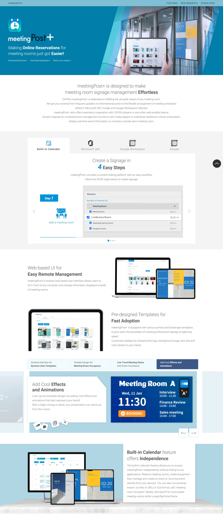

設計目的
此專案包括各種新推出的產品介紹頁面，像是製作海報的"poster"軟體、管理會議室的"meetingPost+"軟體、使用手機遠端管理系統的"Signage Assistant"、以及線上訂閱制的"CMS-WS"伺服器服務。
各個頁面依據產品的個性進行不同設計，像是poster強調便利、快速，因此使用短影片呈現。meetingPost+則是強調與多個平台整合、且功能多樣，因此使用分頁及輪播，在視覺上讓顧客知道數量很多、同時又不會使該頁面篇幅過長。Signage Assistant強調的是使用手機在任何地方都能管理系統，因此配圖上強調手機的元素。而CMS-WS強調雲端跨裝置整合，使用藍色系與雲的印象做連結。
設計細節
在poster的介紹頁面，大量使用短影片讓使用者能更快速了解產品如何實際使用。
在meetingPost+的介紹頁面，因該產品功能多元且整合許多平台，使用分頁及輪播的方式讓介紹更為清楚。
在CMS-WS的介紹頁面，因伺服器操作上較為複雜，因此使用向量插圖的方式將功能做簡化，讓顧客能快速了解產品。
設計展示
